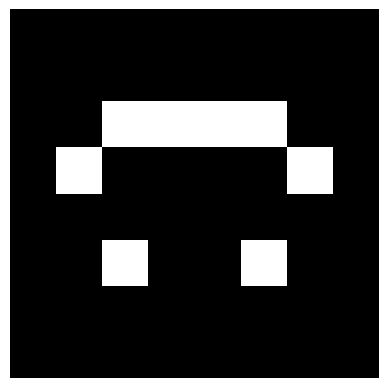

students = ["Alice", "Bruno", "Chloe", "Diego", "Emma", "Farid"]
marks_list = [
[0.75, 1, 0.5, 1, 0.5, 1, 1, 0, 1, 1, 1], # Alice
[0.5, 0.25, 1, 0.5, 0, 1, 0, 1, 1, 0, 1], # Bruno
[1, 1, 1, 1, 0.5, 1, 1, 1, 0, 1, 1], # Chloe
[0.25, 0.5, 0, 0.5, 0.5, 0, 1, 0, 1, 0, 1], # Diego
[1, 0.75, 0.5, 1, 1, 1, 0, 1, 1, 1, 1], # Emma
[0.5, 0.5, 0.5, 0, 1, 1, 1, 0, 0, 1, 0], # Farid
]Introduction to NumPy
Module 3: NumPy
Introduction to NumPy
You have just finished the midterm. Now let’s look at it from the other side of the desk: you are the professor, and you have a pile of exams to grade.
The midterm had 11 exercises:
- Exercises 1 and 2 are open problems, worth 20 points each.
- Exercises 3 to 5 are debugging exercises, worth 10 points each.
- Exercises 6 to 11 are multiple-choice questions, worth 5 points each.
Exercise | Value (points) |
1 | 20 |
2 | 20 |
3 | 10 |
4 | 10 |
5 | 10 |
6 | 5 |
7 | 5 |
8 | 5 |
9 | 5 |
10 | 5 |
11 | 5 |
1 | 20 |
2 | 20 |
3 | 10 |
4 | 10 |
5 | 10 |
6 | 5 |
7 | 5 |
8 | 5 |
9 | 5 |
10 | 5 |
11 | 5 |
To keep things simple, you mark every exercise from 0 (nothing correct) to 1 (fully correct). Later, each mark will be multiplied by the value of its exercise. You store your marks in a table: one row per student, one column per exercise.
Student | Ex. 1 | Ex. 2 | Ex. 3 | Ex. 4 | Ex. 5 | Ex. 6 | Ex. 7 | Ex. 8 | Ex. 9 | Ex. 10 | Ex. 11 |
Alice | 0.75 | 1 | 0.5 | 1 | 0.5 | 1 | 1 | 0 | 1 | 1 | 1 |
Bruno | 0.5 | 0.25 | 1 | 0.5 | 0 | 1 | 0 | 1 | 1 | 0 | 1 |
Chloe | 1 | 1 | 1 | 1 | 0.5 | 1 | 1 | 1 | 0 | 1 | 1 |
Diego | 0.25 | 0.5 | 0 | 0.5 | 0.5 | 0 | 1 | 0 | 1 | 0 | 1 |
Emma | 1 | 0.75 | 0.5 | 1 | 1 | 1 | 0 | 1 | 1 | 1 | 1 |
Farid | 0.5 | 0.5 | 0.5 | 0 | 1 | 1 | 1 | 0 | 0 | 1 | 0 |
Alice | 0.75 | 1 | 0.5 | 1 | 0.5 | 1 | 1 | 0 | 1 | 1 | 1 |
Bruno | 0.5 | 0.25 | 1 | 0.5 | 0 | 1 | 0 | 1 | 1 | 0 | 1 |
Chloe | 1 | 1 | 1 | 1 | 0.5 | 1 | 1 | 1 | 0 | 1 | 1 |
Diego | 0.25 | 0.5 | 0 | 0.5 | 0.5 | 0 | 1 | 0 | 1 | 0 | 1 |
Emma | 1 | 0.75 | 0.5 | 1 | 1 | 1 | 0 | 1 | 1 | 1 | 1 |
Farid | 0.5 | 0.5 | 0.5 | 0 | 1 | 1 | 1 | 0 | 0 | 1 | 0 |
Throughout this session, you will manage this table. You will start with the tools you already know, see where they become uncomfortable, and then switch to the right tool for tables of numbers (arrays): NumPy.
The Problem: Marks Stored in Lists
Six students took the exam. With what we learned in Module 2, the natural choice is a nested list: one inner list per student.
Some questions are easy. All the marks of Alice are one row:
print(marks_list[0])[0.75, 1, 0.5, 1, 0.5, 1, 1, 0, 1, 1, 1]Other questions are not. To check how the class did in exercise 4, we need to visit every row and take its fourth element:
exercise_4 = [row[3] for row in marks_list]
print(exercise_4)[1, 0.5, 1, 0.5, 1, 0]And to review the open problems (exercises 1 and 2) of Bruno, Chloe, and Diego, we combine a slice of rows with a slice inside every row:
block = [row[:2] for row in marks_list[1:4]]
print(block)[[0.5, 0.25], [1, 1], [0.25, 0.5]]
Exercise: The Last Question
Using only lists, get the marks of exercise 11 (the last one) for the last three students.
Solution
last_question = [row[-1] for row in marks_list[-3:]]
print(last_question)[1, 1, 0]This works, but every new question needs a new loop or comprehension, and the code no longer looks like the question we asked. A list does not know that it is a array: it only knows that it contains other lists. We need a tool that understands rows and columns.
What is NumPy?
NumPy (Numerical Python) is a package for numerical computing. It provides multidimensional arrays and mathematical functions designed to operate on those arrays efficiently. By the end of this session, the two questions above will be one short expression each. By the end of the next session, computing the final grade of every student will be one line too.
Why Use NumPy?
- Arrays store numerical data efficiently.
- Arrays know their own shape: rows, columns, and beyond.
- Array operations usually require less code than equivalent list-based loops.
- NumPy’s optimized implementation makes large calculations fast.
# First, let's import NumPy
import numpy as npCreating Arrays
To create an array we use the function np.array(). We must pass a list or tuple to the function. Let’s start with the value of each exercise, in points.
weights = np.array([20, 20, 10, 10, 10, 5, 5, 5, 5, 5, 5])
print(weights)[20 20 10 10 10 5 5 5 5 5 5]Tuples work too. Imagine that the marks of one student arrive as a tuple from another program:
alice = np.array((0.75, 1, 0.5, 1, 0.5, 1, 1, 0, 1, 1, 1))
print(alice)[0.75 1. 0.5 1. 0.5 1. 1. 0. 1. 1. 1. ]
What about sets?
Suppose the student IDs of the group are stored in a set: {101, 102, 103}. The np.array documentation says that the object must be an array or “any (nested) sequence”. A set is not a sequence: it is unordered and does not support indexing. NumPy therefore stores the whole set as one single Python object, not as three IDs.
ids = np.array({101, 102, 103})
print(ids)
print(ids.shape)
print(ids.dtype){101, 102, 103}
()
objectConvert the set to a list first: np.array(sorted({101, 102, 103})).
Exercise: Three Arguments
You try to store Diego’s debugging marks. Without running the code, decide what happens.
diego_debugging = np.array(0, 0.5, 0.5)
print(diego_debugging)
Solution
The code raises a TypeError. np.array() expects one object (a list or tuple) as its first argument, but here it receives three separate values. The fix is np.array([0, 0.5, 0.5]).
Array Types
Look again at Alice’s marks: we typed 1 and 0 as integers, but NumPy printed 1. and 0.. Every NumPy array has one data type, available through its dtype property. When the input mixes types, NumPy chooses one type capable of representing every value.
print(alice.dtype)
print(weights.dtype)float64
int64
Exercise: Mixed Marks
The multiple-choice questions are marked 0 or 1, while the debugging exercises can get 0.5. Without running the code, write down what each line prints.
chloe_mc = np.array([1, 1, 1, 0, 1, 1])
chloe_debugging = np.array([1, 1, 0.5])
print(chloe_mc, chloe_mc.dtype)
print(chloe_debugging, chloe_debugging.dtype)
Solution
[1 1 1 0 1 1] int64
[1. 1. 0.5] float64The first array only contains integers, so it keeps an integer type. In the second, a single 0.5 is enough to turn every element into a float, so the array has one data type. (On some Windows installations the integer type may show as int32.)
This rule has a consequence. Why don’t we store the student names inside the array, as the first column?
row = np.array(["Alice", 0.75, 1, 0.5])
print(row)
print(row.dtype)['Alice' '0.75' '1' '0.5']
<U32The only type that can represent both "Alice" and 0.75 is a string, so every mark became text. That is why we keep students in a separate list, and only numbers in the array.
Exercise: The Unreadable Answer
While grading Farid’s exam, you cannot read his answer to exercise 2, so you type "?" until you ask him. Without running the code, what is the dtype of farid? Why is it a problem?
farid = np.array([0.5, "?", 0.5, 0])
print(farid.dtype)
Solution
The array becomes an array of strings (its dtype is <U32, a Unicode string). Every mark is now text, so we can no longer treat the row as numbers.
NumPy has a special float value for missing data, np.nan (“not a number”), which keeps the array numeric:
farid = np.array([0.5, np.nan, 0.5, 0])
print(farid)
print(farid.dtype)[0.5 nan 0.5 0. ]
float64We can also choose the type ourselves, in the second argument of np.array(). If a value cannot be converted, NumPy raises an error instead of silently changing the type.
a = np.array([1, 0, 1], float)
print(a)[1. 0. 1.]a = np.array([1, "?", 1], float)ValueError: could not convert string to float: '?'Multi-Dimensional Arrays
One student is a one-dimensional array. The whole group is a two-dimensional array, created from the nested list.
marks = np.array(marks_list)
print(marks)[[0.75 1. 0.5 1. 0.5 1. 1. 0. 1. 1. 1. ]
[0.5 0.25 1. 0.5 0. 1. 0. 1. 1. 0. 1. ]
[1. 1. 1. 1. 0.5 1. 1. 1. 0. 1. 1. ]
[0.25 0.5 0. 0.5 0.5 0. 1. 0. 1. 0. 1. ]
[1. 0.75 0.5 1. 1. 1. 0. 1. 1. 1. 1. ]
[0.5 0.5 0.5 0. 1. 1. 1. 0. 0. 1. 0. ]]Compare this output with print(marks_list): NumPy prints the array as a table, with aligned rows and columns.
In NumPy, the order of dimensions is indicated by the nesting of brackets. The outermost brackets represent the first dimension (dimension 0, the rows, here the students). The next level of brackets represents the second dimension (dimension 1, the columns, here the exercises). Each new level of nesting adds one more dimension.
An array must be rectangular: every row needs the same number of values. What if you forget to type one of Diego’s marks?
broken = np.array([
[0.75, 1, 0.5, 1, 0.5, 1, 1, 0, 1, 1, 1],
[0.25, 0.5, 0, 0.5, 0.5, 0, 1, 0, 1, 0], # Diego: only 10 marks
])ValueError: setting an array element with a sequence. The requested array has an inhomogeneous shape after 1 dimensions. The detected shape was (2,) + inhomogeneous part.
Exercise: Two Campuses
The same exam was taken in two campuses, Madrid and Segovia. Create a single array called campuses that stores, for each campus, the marks of two students in the two open problems. Use these marks:
- Madrid: student 1 got
0.75, 1and student 2 got0.5, 0.25. - Segovia: student 1 got
1, 0.5and student 2 got0.25, 0.75.
How many levels of brackets do you need?
Solution
campuses = np.array([
[[0.75, 1], [0.5, 0.25]], # Madrid
[[1, 0.5], [0.25, 0.75]], # Segovia
])
print(campuses)[[[0.75 1. ]
[0.5 0.25]]
[[1. 0.5 ]
[0.25 0.75]]]We need three levels of brackets, so the array is three-dimensional: campuses, then students, then exercises.
Basic Properties of Arrays
An array knows its own structure. Unlike methods, properties don’t require parentheses when accessed. Here are four key properties, applied to our array of marks.
ndim: the number of dimensions of the array.
print(marks.ndim)2shape: a tuple with the length of each dimension. For an array with n rows and m columns, the shape is (n, m): here, 6 students and 11 exercises.
print(marks.shape)(6, 11)size: the total number of elements, here the total number of marks you wrote.
print(marks.size)66dtype: the data type of the elements.
print(marks.dtype)float64
Exercise: Shapes That Must Agree
- Print the shape of
weights. Which number ofmarks.shapemust it match, and why? - A seventh student takes the exam late, and you add a bonus exercise 12 for everyone. Without running any code, predict the
ndim,shape, andsizeof the new array of marks. - Predict the same three properties for
campuses.
Solution
weights.shapeis(11,): one value per exercise. It must match the number of columns ofmarks,marks.shape[1], because every column is one exercise.- The new array has
ndim2,shape(7, 12), andsize84. - For
campuses:
print(weights.shape, marks.shape[1])
print(campuses.ndim, campuses.shape, campuses.size)(11,) 11
3 (2, 2, 2) 8Creating Arrays Without Typing Them
Typing every value is fine for six students, but the other group has 30. NumPy can build arrays of any shape for us.
np.zeros() creates an array full of zeros. It is an empty array of marks for 30 students and 11 exercises, waiting to be filled. Note that the shape is passed as one tuple.
new_group = np.zeros((30, 11))
print(new_group.shape)(30, 11)np.ones() works the same way. What does a perfect exam look like?
perfect = np.ones(11)
print(perfect)[1. 1. 1. 1. 1. 1. 1. 1. 1. 1. 1.]np.arange(start, stop, step) works like range(), but returns an array. The exercise numbers go from 1 to 11:
exercise_numbers = np.arange(1, 12)
print(exercise_numbers)[ 1 2 3 4 5 6 7 8 9 10 11]np.linspace(start, stop, num) returns num values evenly spaced between start and stop, both included. It is perfect to build a marking rubric. The open problems are marked in quarters:
open_rubric = np.linspace(0, 1, 5)
print(open_rubric)[0. 0.25 0.5 0.75 1. ]
Exercise: Exam Versions
To avoid copying, students in odd seats (1, 3, 5, …) get version A of the exam. The room has 30 seats. Create an array with the seat numbers that get version A.
Solution
version_a = np.arange(1, 31, 2)
print(version_a)[ 1 3 5 7 9 11 13 15 17 19 21 23 25 27 29]
Exercise: The Debugging Rubric
The debugging exercises are marked in halves: no error found, one error found, or both errors found.
- Create this rubric with
np.linspace(). - Create the rubric of the open problems again, but now with
np.arange(). Be careful with the stopping value!
Solution
debugging_rubric = np.linspace(0, 1, 3)
print(debugging_rubric)
open_rubric = np.arange(0, 1.25, 0.25)
print(open_rubric)[0. 0.5 1. ]
[0. 0.25 0.5 0.75 1. ]np.arange() excludes its stopping value, so we must stop one step after 1. np.linspace() includes both ends and asks for the number of values instead of the step, which is usually easier for rubrics.
Reshape: From a Form to an Array
Imagine that you graded the exams in an online form, which exports all the marks as one long list: first the 11 marks of the first student, then the 11 marks of the second, and so on.
form_export = np.array([
0.75, 1, 0.5, 1, 0.5, 1, 1, 0, 1, 1, 1,
0.5, 0.25, 1, 0.5, 0, 1, 0, 1, 1, 0, 1,
1, 1, 1, 1, 0.5, 1, 1, 1, 0, 1, 1,
0.25, 0.5, 0, 0.5, 0.5, 0, 1, 0, 1, 0, 1,
1, 0.75, 0.5, 1, 1, 1, 0, 1, 1, 1, 1,
0.5, 0.5, 0.5, 0, 1, 1, 1, 0, 0, 1, 0,
])
print(form_export.shape)(66,)The reshape() method reorganizes the same values into a new shape, row by row. It returns a new array and does not modify the original.
table = form_export.reshape(6, 11)
print(table)[[0.75 1. 0.5 1. 0.5 1. 1. 0. 1. 1. 1. ]
[0.5 0.25 1. 0.5 0. 1. 0. 1. 1. 0. 1. ]
[1. 1. 1. 1. 0.5 1. 1. 1. 0. 1. 1. ]
[0.25 0.5 0. 0.5 0.5 0. 1. 0. 1. 0. 1. ]
[1. 0.75 0.5 1. 1. 1. 0. 1. 1. 1. 1. ]
[0.5 0.5 0.5 0. 1. 1. 1. 0. 0. 1. 0. ]]The requested shape must contain exactly the same number of elements as the original array.
table = form_export.reshape(6, 10)ValueError: cannot reshape array of size 66 into shape (6,10)
Exercise: Grading Exercise by Exercise
Many professors grade exercise by exercise: first exercise 1 for every student, then exercise 2 for every student, and so on. A form filled in that order exports the 6 marks of exercise 1, then the 6 marks of exercise 2, and so on. Which reshape() gives an array with the right structure? What is its shape, and what does each row represent?
Solution
.reshape(11, 6), which gives an array with shape (11, 6): one row per exercise and one column per student. Reshape fills the new array row by row, so the reshape must follow the order in which the values arrive. Turning this array into one row per student is a different operation (transposing), which we will see in a later session.
Array Indexing: One Mark
Indexing a one-dimensional array is the same as indexing lists, tuples, or strings. Be careful: exercise 1 is at index 0.
print(weights[0]) # value of exercise 1
print(alice[3]) # Alice's mark in exercise 420
1.0Indexing a two-dimensional array with one index returns a whole row: one student.
print(marks[2]) # Chloe[1. 1. 1. 1. 0.5 1. 1. 1. 0. 1. 1. ]Indexing it “like a nested list” works too: first the row, then the element inside that row.
print(marks[2][4]) # Chloe, exercise 50.5For NumPy arrays, we can include all indices within a single pair of brackets, separated by commas. This is called indexing with a tuple, and it reads as marks[student, exercise].
print(marks[2, 4]) # Chloe, exercise 50.5We do not need to remember the position of every student. The list method index() from Module 2 finds it for us:
row = students.index("Diego")
print(marks[row, 0]) # Diego, exercise 10.25Indexing also lets us change a value. Diego asked for a revision of exercise 3, and you realize he found one of the two errors. His mark goes up to 0.5:
marks[3, 2] = 0.5
print(marks[3])[0.25 0.5 0.5 0.5 0.5 0. 1. 0. 1. 0. 1. ]
Exercise: Negative Row Index
Without running the code, write down what it prints.
print(marks[-1, 0])
Solution
0.5-1 selects the last row (Farid) and 0 selects exercise 1.
Exercise: Lists Are Not Arrays
What happens when this code runs? Explain why.
print(marks_list[2, 4])
Solution
The code raises TypeError: list indices must be integers or slices, not tuple. marks_list is a nested list, and lists cannot be indexed with a tuple. Use marks_list[2][4] for the list, or marks[2, 4] for the array.
Exercise: Two Versions
The exam had two versions, and you keep the marks of each version in its own array (three exercises shown). Without running the code, find the value of x.
version_A = np.array([[1, 0.5, 0], [0.25, 1, 1]])
version_B = np.array([[0.75, 0, 1], [1, 0.5, 0.5]])
versions = [version_A, version_B]
x = versions[1][0, 2]
print(x)
Solution
1.0versions[1] is a list index that returns version_B. Then [0, 2] is an array index: first student, third exercise. The array contains floats, so the value prints as 1.0.
Exercise: Grade Revision
Emma also asked for a revision. Her open problem in exercise 2 deserves full marks. Update the array using students.index() and the exercise number, then print Emma’s row.
Solution
row = students.index("Emma")
col = 2 - 1 # exercise 2 is at index 1
marks[row, col] = 1
print(marks[row])[1. 1. 0.5 1. 1. 1. 0. 1. 1. 1. 1. ]Array Slicing: Rows, Columns, and Blocks
Slicing a one-dimensional array is the same as slicing a list. The start is included and the stop is excluded. The three parts of the exam are three slices:
print(weights[:2]) # open problems
print(weights[2:5]) # debugging
print(weights[5:]) # multiple choice[20 20]
[10 10 10]
[5 5 5 5 5 5]With a two-dimensional array, we can slice each dimension separately, inside the same brackets. A colon : alone means “everything along this dimension”. This solves the first question of the session, how the class did in exercise 4, in one expression:
print(marks[:, 3]) # all students, exercise 4[1. 0.5 1. 0.5 1. 0. ]And the whole exam of one student:
print(marks[1, :]) # Bruno, all exercises[0.5 0.25 1. 0.5 0. 1. 0. 1. 1. 0. 1. ]The second question of the session, the open problems of Bruno, Chloe, and Diego, is a block of rows and columns:
print(marks[1:4, :2])[[0.5 0.25]
[1. 1. ]
[0.25 0.5 ]]Compare it with the list version, [row[:2] for row in marks_list[1:4]]. The NumPy version reads exactly like the question: rows 1 to 3, columns 0 to 1.
Steps work as they do in lists. If students sat in alternating seats, every other row starting from the first one got version A:
print(marks[::2])[[0.75 1. 0.5 1. 0.5 1. 1. 0. 1. 1. 1. ]
[1. 1. 1. 1. 0.5 1. 1. 1. 0. 1. 1. ]
[1. 1. 0.5 1. 1. 1. 0. 1. 1. 1. 1. ]]A negative step reverses the order. When you collect the exams, the last one delivered ends up on top of the pile:
print(marks[::-1])[[0.5 0.5 0.5 0. 1. 1. 1. 0. 0. 1. 0. ]
[1. 1. 0.5 1. 1. 1. 0. 1. 1. 1. 1. ]
[0.25 0.5 0.5 0.5 0.5 0. 1. 0. 1. 0. 1. ]
[1. 1. 1. 1. 0.5 1. 1. 1. 0. 1. 1. ]
[0.5 0.25 1. 0.5 0. 1. 0. 1. 1. 0. 1. ]
[0.75 1. 0.5 1. 0.5 1. 1. 0. 1. 1. 1. ]]Slices can also be used to fill an array. Suppose a machine grades the multiple-choice part automatically, and sends you the six marks of each student at once:
small_group = np.zeros((3, 11))
small_group[0] = [1, 0.5, 1, 0.5, 1, 1, 0, 1, 1, 1, 1] # first student, typed by hand
small_group[1:, 5:] = [
[1, 1, 0, 1, 1, 0], # second student, multiple choice
[0, 1, 1, 1, 0, 1], # third student, multiple choice
]
print(small_group)[[1. 0.5 1. 0.5 1. 1. 0. 1. 1. 1. 1. ]
[0. 0. 0. 0. 0. 1. 1. 0. 1. 1. 0. ]
[0. 0. 0. 0. 0. 0. 1. 1. 1. 0. 1. ]]
Exercise: Version B
Students in even seats (Bruno, Diego, and Farid) got version B. Use one slice to get all their marks.
Solution
print(marks[1::2])[[0.5 0.25 1. 0.5 0. 1. 0. 1. 1. 0. 1. ]
[0.25 0.5 0.5 0.5 0.5 0. 1. 0. 1. 0. 1. ]
[0.5 0.5 0.5 0. 1. 1. 1. 0. 0. 1. 0. ]]
Exercise: The Debugging Part
Get the marks of the debugging part (exercises 3 to 5) for every student, and the value of those exercises.
Solution
print(marks[:, 2:5])
print(weights[2:5])[[0.5 1. 0.5]
[1. 0.5 0. ]
[1. 1. 0.5]
[0.5 0.5 0.5]
[0.5 1. 1. ]
[0.5 0. 1. ]]
[10 10 10]
Exercise: Bottom of the Pile
Get the marks of exercise 1 for Farid, Emma, and Diego, in that order.
Solution
print(marks[5:2:-1, 0])[0.5 1. 0.25]Start at row 5 (Farid), stop before row 2, and move backwards. marks[-1:-4:-1, 0] works too.
Exercise: Predict the Block
Without running the code, write down which students and which exercises are selected, and the shape of the result.
print(marks[::2, 5:])
Solution
Every other student, starting from the first (Alice, Chloe, Emma), and every exercise from exercise 6 onwards (the multiple-choice part). The shape is (3, 6).
print(marks[::2, 5:])[[1. 1. 0. 1. 1. 1.]
[1. 1. 1. 0. 1. 1.]
[1. 0. 1. 1. 1. 1.]]Challenge: Madrid and Segovia
Four students took the exam in each campus. You store all the marks in one three-dimensional array, exam, with dimensions campus (Madrid, then Segovia), student, and exercise.
exam = np.array([
[[1, 0.75, 1, 0.5, 1, 1, 1, 0, 1, 1, 1], # Madrid
[0.25, 0.5, 0.5, 0, 0.5, 1, 0, 0, 1, 1, 0],
[0.75, 0.75, 1, 1, 0.5, 0, 1, 1, 1, 0, 1],
[0.5, 0, 0, 0.5, 1, 1, 1, 1, 0, 1, 1]],
[[0.5, 1, 0.5, 1, 1, 1, 1, 1, 1, 0, 1], # Segovia
[1, 1, 1, 0.5, 1, 1, 0, 1, 1, 1, 1],
[0, 0.25, 0.5, 0.5, 0, 0, 1, 0, 1, 0, 0],
[0.75, 0.5, 1, 1, 0.5, 1, 1, 0, 0, 1, 1]],
])- Print the
shape,ndim, andsizeofexam. What does each number of the shape mean? - Print all the marks of the second student of Segovia.
- Print the multiple-choice part (exercises 6 to 11) of every student in Madrid.
- Print the marks of exercise 1 for every student in both campuses. What is the shape of the result?
- The fourth student of Madrid asked for a revision: her open problem in exercise 2 deserves a
1. Fix it. - Print the open problems of the first two students of each campus.
Possible solution
# 1. 2 campuses, 4 students per campus, 11 exercises
print(exam.shape, exam.ndim, exam.size)
# 2. Segovia (index 1), second student (index 1), all exercises
print(exam[1, 1])
# 3. Madrid, all students, exercises 6 to 11
print(exam[0, :, 5:])
# 4. Both campuses, all students, exercise 1: shape (2, 4)
print(exam[:, :, 0])
print(exam[:, :, 0].shape)
# 5. Madrid, fourth student, exercise 2
exam[0, 3, 1] = 1
print(exam[0, 3])
# 6. Both campuses, first two students, exercises 1 and 2
print(exam[:, :2, :2])(2, 4, 11) 3 88
[1. 1. 1. 0.5 1. 1. 0. 1. 1. 1. 1. ]
[[1. 1. 0. 1. 1. 1.]
[1. 0. 0. 1. 1. 0.]
[0. 1. 1. 1. 0. 1.]
[1. 1. 1. 0. 1. 1.]]
[[1. 0.25 0.75 0.5 ]
[0.5 1. 0. 0.75]]
(2, 4)
[0.5 1. 0. 0.5 1. 1. 1. 1. 0. 1. 1. ]
[[[1. 0.75]
[0.25 0.5 ]]
[[0.5 1. ]
[1. 1. ]]]Extra: An Image Is Also an Array
A table of marks is an array of numbers. What else could be stored as an array of numbers? A picture.
A digital image is a grid of small squares called pixels. In a grayscale image, each pixel is one number: 0 is black, 1 is white, and the values in between are shades of gray. So an image is just a two-dimensional array, where the shape is (height, width).
The helper function below displays an array as an image. You do not need to understand how it works: we will learn more about plotting later in the course.
import matplotlib.pyplot as plt
def show(image):
"""Display a 2D array as a grayscale image (0 = black, 1 = white)."""
plt.imshow(image, cmap="gray", vmin=0, vmax=1)
plt.axis("off")
plt.show()Everything we learned today works on images. A black canvas is np.zeros(), and we paint with indexing and slicing:
face = np.zeros((8, 8))
face[2, 2] = 1 # left eye
face[2, 5] = 1 # right eye
face[5, 2:6] = 1 # mouth
face[4, 1] = 1 # left corner of the smile
face[4, 6] = 1 # right corner of the smile
show(face)
Exercise: Upside Down
Without changing face, display it upside down. Then display its mirror image (left and right swapped).
Solution
show(face[::-1]) # reverse the rows
show(face[:, ::-1]) # reverse the columns

Exercise: A Chessboard
Create an \(8 \times 8\) chessboard (alternating black and white squares) using np.zeros() and only two slice assignments.
Solution
board = np.zeros((8, 8))
board[::2, 1::2] = 1 # even rows, odd columns
board[1::2, ::2] = 1 # odd rows, even columns
show(board)
With lists, this needs two nested loops and a condition. With slicing, each line paints a whole set of squares.
Color images add a third dimension: each pixel stores three numbers (red, green, and blue), so their shape is (height, width, 3). We will come back to images later in this module.
Summary and Reflection
- A NumPy array is a table of values of one data type; mixing types changes the
dtypeof every element. ndim,shape,size, anddtypedescribe an array.np.zeros(),np.ones(),np.arange(), andnp.linspace()build arrays without typing the values;reshape()reorganizes them.marks[row, col]selects one value; slices such asmarks[:, 3]ormarks[1:4, :2]select rows, columns, and blocks.- Slice stopping positions are excluded, just as they are for lists.
Explain in your own words why marks[2, 4] works for a NumPy array but not for a nested Python list.
We have the marks and the value of each exercise, but we still do not have the most important number: the final grade of each student. In the next session, we will compute it for the whole class in one line.
Homework and Review
Work through the homework exercises available here.